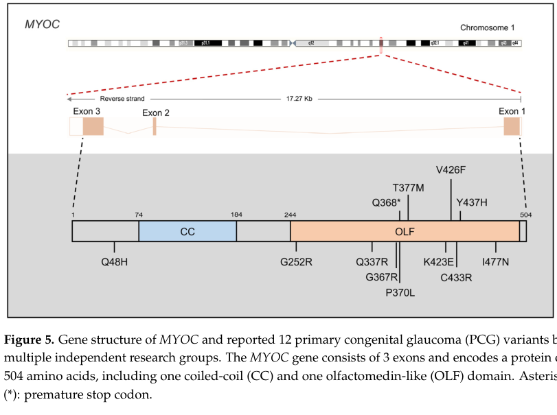

Juvenile Open-Angle Glaucoma (JOAG) — Disease Characteristics Research Report
Target disease: Juvenile open-angle glaucoma (JOAG)
MONDO: MONDO:0020367 (via OpenTargets disease mapping) (OpenTargets Search: juvenile open angle glaucoma)
Category: Mendelian (early-onset glaucoma frequently follows Mendelian inheritance) (pan2024exploringthegenetic pages 1-2)
Executive overview (current understanding)
Juvenile open-angle glaucoma (JOAG) is a primary childhood/early-onset open-angle glaucoma characterized by elevated intraocular pressure (IOP), glaucomatous optic neuropathy, and corresponding visual field defects, typically presenting in childhood, adolescence, or young adulthood, classically before age 40 (or sometimes before ~35 in certain definitions). It differs from primary congenital glaucoma by the absence of congenital anterior-segment abnormalities (e.g., Haab striae, enlarged corneal diameter, anterior segment dysgenesis) and by a later onset, yet it often shows more severe IOP elevation and faster progression than typical adult-onset primary open-angle glaucoma (POAG). (almulhim2024agesexand pages 1-2, huang2018detectionofmutations pages 1-2, pan2024exploringthegenetic pages 9-11)
1. Disease information
1.1 Definition and overview
A recent childhood glaucoma genetics review describes a modern consensus classification in which childhood glaucoma is divided into primary vs secondary forms, and primary childhood glaucoma includes primary congenital glaucoma (PCG) and JOAG. In this framework, JOAG may be asymptomatic and identified incidentally or during family screening. (pan2024exploringthegenetic pages 1-2)
Clinical definition used in recent JOAG cohorts: * Saudi tertiary-center cohort (2015–2022) defined inclusion as symptom onset between 3 and 40 years, glaucomatous optic neuropathy with compatible visual field loss, persistent elevated IOP (>22 mmHg on ≥2 occasions), and open angles. (almulhim2024agesexand pages 2-4)
1.2 Key identifiers
- MONDO: MONDO:0020367 (OpenTargets mapping) (OpenTargets Search: juvenile open angle glaucoma)
- Other identifiers (OMIM/Orphanet/ICD/MeSH): not directly retrievable from the accessible full-text sources in this run; should be added from OMIM/Orphanet/ICD/MeSH authoritative records in a subsequent curation pass.
1.3 Synonyms / alternative names
Commonly used terms in the literature include: * “juvenile open-angle glaucoma (JOAG)” (almulhim2024agesexand pages 1-2, pan2024exploringthegenetic pages 1-2) * “juvenile-onset open-angle glaucoma” (JOAG) (huang2018detectionofmutations pages 1-2) * “juvenile-onset primary open-angle glaucoma” (juvenile-onset POAG) (huang2018detectionofmutations pages 1-2)
1.4 Evidence type
The information below is derived from: * Aggregated disease-level resources/reviews (systematic review; narrative reviews) (kumar2024geneticchangesand pages 1-2, pan2024exploringthegenetic pages 1-2) * Human clinical cohorts/case series (retrospective cohorts and surgical series) (almulhim2024agesexand pages 5-7, un2024surgicalapproachesto pages 1-2) * Human genetics case report (de novo MYOC variant) (souzeau2016anovelde pages 2-5) * In vitro / biochemical variant interpretation (MYOC olfactomedin-domain assays) (scelsi2023quantitativedifferentiationof pages 1-3)
2. Etiology
2.1 Disease causal factors (primary causes)
JOAG is predominantly genetic and is classically considered a Mendelian disorder in early-onset glaucoma; one review notes: “early-onset cases (before 40 years) typically displaying Mendelian inheritance patterns”. (pan2024exploringthegenetic pages 1-2)
Causal genetic factors are most strongly supported for MYOC (myocilin) in autosomal dominant JOAG, with additional genes sometimes implicated in juvenile/early-onset open-angle glaucoma phenotypes (e.g., CYP1B1, OPTN, FOXC1; and biallelic CPAMD8 in some childhood/juvenile open-angle glaucoma cases). (OpenTargets Search: juvenile open angle glaucoma, huang2018detectionofmutations pages 1-2, kumar2024geneticchangesand pages 1-2, pan2024exploringthegenetic pages 9-11)
2.2 Risk factors
Genetic risk factors * MYOC pathogenic variants: A 2024 systematic review of childhood glaucoma genetics reports: “MYOC variants … with prevalence up to 36% among patients with juvenile open angle glaucoma.” (kumar2024geneticchangesand pages 1-2) * A Saudi JOAG cohort review within a clinical cohort paper notes MYOC mutations were found in ~3.6–9.5% of JOAG patients (literature figure cited within that paper). (almulhim2024agesexand pages 1-2)
Non-genetic / demographic risk factors JOAG is frequently associated with myopia and family history in clinic-based cohorts (see Phenotypes and Epidemiology below), but robust, JOAG-specific environmental risk factor quantification was not available in the retrieved corpus.
2.3 Protective factors
JOAG-specific protective factors were not identified from the retrieved sources. (No relevant evidence in current corpus.)
2.4 Gene–environment interactions
No JOAG-specific gene–environment interaction evidence was identified in the retrieved sources. (No relevant evidence in current corpus.)
3. Phenotypes
3.1 Core clinical phenotype (human)
Hallmarks: elevated IOP with glaucomatous optic nerve damage and corresponding visual field defects in an anatomically open angle. (almulhim2024agesexand pages 2-4, pan2024exploringthegenetic pages 1-2)
Severity: A 2024 review states JOAG is characterized by “extremely elevated IOP, often exceeding 50 mmHg, necessitating surgical treatment” and is inherited as an autosomal dominant trait. (pan2024exploringthegenetic pages 9-11)
Cohort phenotype statistics (Saudi, 2015–2022): * Mean age 26.91 years; range 6–38 (45 patients; 87 eyes) (almulhim2024agesexand pages 2-4) * Bilateral disease: 93.3% (42/45) (almulhim2024agesexand pages 2-4) * Myopia: 93.3% (42/45) (almulhim2024agesexand pages 4-5) * Family history of glaucoma: 51.1% (23/45) (almulhim2024agesexand pages 4-5) * Optic nerve: mean cup–disc ratio 0.73±0.14 (OD) and 0.66±0.17 (OS) (almulhim2024agesexand pages 2-4) * Visual field severity: severe defects in 57.1% (OD) and 44.4% (OS) (almulhim2024agesexand pages 4-5)
Suggested HPO terms (examples; not exhaustive): * Elevated intraocular pressure — HP:0000506 * Glaucomatous optic disc cupping — HP:0030539 (or Optic disc cupping) * Visual field defect — HP:0001123 * Retinal nerve fiber layer thinning (OCT) — HP:0030791 (if used) * Myopia — HP:0000545
3.2 Quality-of-life impact
Direct JOAG-specific QoL instruments (EQ-5D, VFQ-25, etc.) were not located in the retrieved sources. However, JOAG can cause substantial irreversible vision loss through severe early visual field defects, implying significant functional impact. (almulhim2024agesexand pages 1-2, almulhim2024agesexand pages 4-5)
4. Genetic / molecular information
4.1 Causal genes (and evidence)
MYOC (myocilin) * A 2024 review explicitly states: “genes … associated with PCG; and MYOC (myocilin), associated with JOAG.” (pan2024exploringthegenetic pages 1-2) * JOAG genetic loci include GLC1A (contains MYOC) and others (GLC1J/K/M/N) (pan2024exploringthegenetic pages 9-11)
Other genes reported in JOAG / juvenile-onset open-angle glaucoma contexts * CYP1B1 and OPTN in a Chinese JOAG exome-sequenced cohort (huang2018detectionofmutations pages 1-2) * FOXC1 and other childhood glaucoma genes are discussed for pediatric glaucoma; FOXC1 is referenced as relevant in childhood glaucoma and may be seen in early-onset glaucomas (kumar2024geneticchangesand pages 1-2, pan2024exploringthegenetic pages 1-2) * OpenTargets also links MONDO:0020367 to MYOC, CYP1B1, FOXC1, and others (disease–target association view) (OpenTargets Search: juvenile open angle glaucoma)
4.2 Pathogenic variants (examples from primary literature)
MYOC variant spectrum * Review synthesis (2024): “over 250 MYOC mutations” have been reported; “37.7% are considered pathogenic”; and “approximately 97% of disease-causing MYOC mutations localize to exon 3” (and it references myocilin.com). (pan2024exploringthegenetic pages 9-11) * Key alleles highlighted for JOAG include p.Gln368stop (aggregation), p.Pro370Leu (severe), and p.Tyr437His (earlier onset, higher IOP) (pan2024exploringthegenetic pages 9-11)
Example JOAG variants identified via exome sequencing (Chinese cohort, n=67) * Heterozygous MYOC: c.1109C>T (p.P370L); c.1150G>C (p.D384H) * Heterozygous OPTN: c.985A>G (p.R329G); c.1481T>G (p.L494W) * Homozygous CYP1B1: c.1412T>G (p.I471S); c.1169G>A (p.R390H) (huang2018detectionofmutations pages 1-2)
De novo MYOC in sporadic JOAG * A case report identified a de novo MYOC:c.761C>T, p.(Pro254Leu) in a 14-year-old male with sporadic JOAG and no family history, emphasizing that MYOC testing can be relevant even without family history. (souzeau2016anovelde pages 2-5)
4.3 Inheritance, penetrance, expressivity
- JOAG is described as autosomal dominant in the 2024 review and is commonly framed as a Mendelian early-onset disorder. (pan2024exploringthegenetic pages 1-2, pan2024exploringthegenetic pages 9-11)
- Variable penetrance/expressivity is noted broadly for childhood glaucoma Mendelian genes (“strong penetrance but variable expressivity”), but JOAG-specific penetrance estimates were not available from the accessible full text in this run. (pan2024exploringthegenetic pages 1-2)
4.4 Functional consequences and variant interpretation (recent development)
A 2023 Disease Models & Mechanisms study positions MYOC-associated open-angle glaucoma as a toxic gain-of-function driven by misfolding/aggregation and provides a precision-medicine approach for variant interpretation: * “Inherited missense mutations in the myocilin (MYOC) gene … constitute the strongest genetic link to primary open-angle glaucoma via a toxic gain of function” (scelsi2023quantitativedifferentiationof pages 1-3) * It proposes a single biophysical discriminator: “pathogenicity can be predicted by a thermal stability cutoff of 47 °C” for the olfactomedin domain, supporting improved classification of rare MYOC variants seen in population databases. (scelsi2023quantitativedifferentiationof pages 1-3)
5. Environmental information
JOAG is principally a genetic disease entity in the retrieved sources. No JOAG-specific environmental toxins, infectious triggers, or protective lifestyle factors were identified in the retrieved corpus. (No relevant evidence in current corpus.)
6. Mechanism / pathophysiology
6.1 Causal chain (MYOC-centered, current consensus)
Upstream trigger: germline MYOC pathogenic variant (dominant; toxic gain-of-function) (scelsi2023quantitativedifferentiationof pages 1-3, pan2024exploringthegenetic pages 9-11)
Molecular mechanism: misfolding/aberrant trafficking → ER retention/accumulation → unfolded protein response (UPR) → ER stress → trabecular meshwork (TM) dysfunction/cell death (pan2024exploringthegenetic pages 9-11)
Tissue-level effect: reduced aqueous humor outflow through TM/Schlemm’s canal pathways → sustained IOP elevation (pan2024exploringthegenetic pages 9-11)
Clinical manifestations: optic nerve head damage (cupping/notching), retinal nerve fiber layer loss, progressive visual field defects (almulhim2024agesexand pages 2-4, souzeau2016anovelde pages 2-5)
A 2024 review states: “mutated MYOC tends to accumulate in the endoplasmic reticulum (ER) rather than proper release, leading to activation of the unfolded protein response (UPR) and subsequent ER stress”, and that TM cells may die, “thereby contributing to elevated IOP and the development of glaucoma.” (pan2024exploringthegenetic pages 9-11)
6.2 Pathways, cell types, and ontology suggestions
Key cell types (CL): * Trabecular meshwork cell — suggested (Cell Ontology term usage varies; may map to TM cell types) * Schlemm’s canal endothelial cell — suggested * Retinal ganglion cell — CL:0000740 (primary neurodegeneration target)
Biological processes (GO) – suggested: * Unfolded protein response — GO:0030968 * Response to endoplasmic reticulum stress — GO:0034976 * Protein folding / proteostasis — GO:0006457 * Apoptotic process — GO:0006915 * Regulation of intraocular pressure — suggested process mapping
7. Anatomical structures affected
Primary ocular structures (UBERON suggestions): * Trabecular meshwork (aqueous outflow) — UBERON:0001769 (commonly used) * Schlemm’s canal — UBERON:0001797 (commonly used) * Optic nerve head / optic disc — UBERON mapping dependent on use case * Retina / retinal nerve fiber layer; retinal ganglion cells — UBERON mappings
JOAG is defined by open angles and glaucomatous optic neuropathy with visual field loss, consistent with primary involvement of aqueous outflow tissues and retinal ganglion cell/optic nerve structures. (pan2024exploringthegenetic pages 1-2, almulhim2024agesexand pages 2-4)
8. Temporal development
Onset: childhood to young adulthood; commonly defined as onset/diagnosis between ages 3–40; some reviews describe occurrence “before the age of 35.” (almulhim2024agesexand pages 2-4, pan2024exploringthegenetic pages 9-11)
Course/progression: often progressive with severe IOP elevation and significant visual field loss at presentation in clinic-based cohorts; may be asymptomatic early. (pan2024exploringthegenetic pages 1-2, almulhim2024agesexand pages 4-5)
9. Inheritance and population
9.1 Epidemiology (recently extracted quantitative data)
Estimates vary substantially by setting: * A 2024 Ethiopian tertiary-center childhood glaucoma cohort reported JOAG = 15.5% of glaucomatous eyes (28/181; 95% CI 10.5–21.6). (mulugeta2024childhoodglaucomaprofile pages 1-3) * A 2024 surgical JOAG series reports JOAG as ~0.7% of glaucoma referrals in Caucasians and 3.3% of glaucoma admissions in a tertiary Indian center (as literature context). (un2024surgicalapproachesto pages 1-2) * A registry-oriented summary text reports: “The occurrence of JOAG is estimated at 1 in 50,000 individuals in the United States” (literature-cited figure within that text). (diel2024resultsofa pages 23-26)
9.2 Inheritance pattern
- Often autosomal dominant for MYOC-driven JOAG; early-onset glaucoma is described as typically Mendelian. (pan2024exploringthegenetic pages 1-2, pan2024exploringthegenetic pages 9-11)
9.3 Founder effects / population-specific variants
The retrieved corpus did not provide robust, quantified founder-effect estimates for JOAG variants. However, MYOC p.Gln368stop is highlighted as a common mutation in JOAG. (pan2024exploringthegenetic pages 9-11)
10. Diagnostics
10.1 Clinical diagnostic criteria and tests
CGRN childhood glaucoma criteria (applies to childhood glaucoma diagnosis broadly): diagnosis requires ≥2 of:
1) IOP ≥21 mmHg
2) glaucomatous optic nerve damage (cupping/notching/C:D asymmetry ≥0.2)
3) corneal changes (e.g., increased corneal diameter or Haab striae)
4) visual field defects consistent with glaucomatous optic nerve damage
(pan2024exploringthegenetic pages 1-2)
Common clinical evaluations in JOAG cohorts: * Gold-standard IOP measurement series (thresholds >21 or >22 depending on protocol) (almulhim2024agesexand pages 2-4) * Gonioscopy confirming open angles (almulhim2024agesexand pages 2-4) * Visual fields (Humphrey 24-2 SITA standard in the Saudi cohort) (almulhim2024agesexand pages 2-4) * Optic nerve evaluation (cup–disc ratio) (almulhim2024agesexand pages 2-4)
Differential diagnosis considerations (from cohort definition logic): * Primary congenital glaucoma / anterior segment dysgenesis glaucomas (distinguished by corneal enlargement, Haab striae, abnormal anterior segment) (almulhim2024agesexand pages 1-2, pan2024exploringthegenetic pages 1-2) * Secondary glaucomas (e.g., steroid-induced, post-surgical) in pediatric populations (mulugeta2024childhoodglaucomaprofile pages 1-3)
10.2 Genetic testing (current state)
A 2024 systematic review emphasizes that testing practices are variable and that multiple genes are implicated; it reports that MYOC variants can be detected in up to 36% of JOAG in the literature, supporting MYOC-first or panel-based approaches in early-onset open-angle glaucoma. (kumar2024geneticchangesand pages 1-2)
Suggested approach (evidence-informed): 1) MYOC sequencing (coding + splice regions), with attention to exon 3/olfactomedin domain enrichment in pathogenic variants (pan2024exploringthegenetic pages 9-11) 2) If negative or phenotype suggests broader etiology, consider multi-gene childhood glaucoma / early-onset glaucoma panel including CYP1B1, OPTN, FOXC1 (and others per contemporary panels) (huang2018detectionofmutations pages 1-2, kumar2024geneticchangesand pages 1-2) 3) Consider exome/genome sequencing in unsolved cases (as demonstrated by JOAG exome cohort studies) (huang2018detectionofmutations pages 1-2)
11. Outcome / prognosis
JOAG often presents with severe visual field defects in clinic-based series, reflecting potentially advanced disease at first diagnosis and risk for irreversible vision loss if untreated. In the Saudi cohort, severe visual field defects were common (44–57% of eyes), implying substantial morbidity. (almulhim2024agesexand pages 4-5)
Long-term JOAG-specific survival/mortality is not applicable; vision-related outcomes dominate prognosis. Robust, multi-year JOAG progression models were not available in the retrieved sources.
12. Treatment
12.1 Current applications and real-world implementations
IOP lowering is the principal modifiable factor, achieved with topical medications and frequently surgery in JOAG.
Real-world cohort outcomes (Saudi, 2015–2022): * Surgical group: mean IOP decreased from 30.58±7.10 to 14.92 mmHg (p<0.01). (almulhim2024agesexand pages 5-7) * Non-surgical group: mean IOP decreased from 32.97±6.36 to 13.50 mmHg (p<0.01). (almulhim2024agesexand pages 5-7)
Surgical case series (2019–2022): multiple approaches were used: trabeculectomy with antimetabolite, glaucoma drainage device (Ahmed valve), deep sclerectomy/external trabeculotomy, and gonioscopy-assisted transluminal trabeculotomy (GATT). IOP fell from 27.62±7.17 to 17.62±13.06 mmHg, and 76.9% achieved IOP control without additional surgery during mean 15.6 months follow-up. (un2024surgicalapproachesto pages 1-2)
Modern Schlemm’s canal/outflow surgery (GATT) outcomes (3-year, 2025 study; included for completeness): * IOP decreased from 29.89±9.43 mmHg pre-op to 15.70±4.39 at 12 months and 17.33±3.37 at 36 months; complete success declined from 73.7% (12 mo) to 51.7% (36 mo). (hu2025threeyearoutcomesof pages 1-2)
12.2 MAXO terms (suggested)
- Topical intraocular pressure–lowering therapy — MAXO:0000742 (approximate; verify exact MAXO mapping)
- Trabeculectomy — MAXO term for trabeculectomy (ontology mapping required)
- Glaucoma drainage device implantation — MAXO term
- Trabeculotomy / GATT — MAXO term
12.3 Expert opinion / analysis (authoritative synthesis)
A 2024 genetic landscape review frames JOAG as frequently requiring surgical treatment due to extreme IOP elevation (>50 mmHg in some cases) and emphasizes MYOC-driven disease biology (ER accumulation → UPR/ER stress → TM cell loss). (pan2024exploringthegenetic pages 9-11)
13. Prevention
No primary prevention methods specific to JOAG were identified in the retrieved corpus. The most evidence-supported preventive strategy is secondary prevention via early detection in at-risk individuals (family screening) given the heritable nature and potential asymptomatic early course. (pan2024exploringthegenetic pages 1-2, souzeau2016anovelde pages 2-5)
14. Other species / natural disease
The retrieved corpus did not include naturally occurring JOAG in non-human species (OMIA/VetCompass) evidence.
15. Model organisms
A 2024 review summarizes MYOC model evidence supporting gain-of-function mechanisms and notes that MYOC knockout models do not reproduce glaucoma phenotypes, while expression of specific pathogenic human MYOC mutations (e.g., p.Y437H) in relevant ocular tissues can elevate IOP in mice under certain experimental strategies. (pan2024exploringthegenetic pages 9-11)
Visual evidence
Figure evidence supporting MYOC’s exon/domain organization and pathogenic-variant clustering is available from the 2024 review (Figure 5: MYOC gene structure and variants). (pan2024exploringthegenetic media 1a72f31d)
Summary tables
The following table consolidates high-yield disease facts, genetics, phenotypes, epidemiology, and treatment outcomes from the evidence base assembled here.
Table (click to expand)
| Domain | Key points | Quantitative data | Key sources |
|---|---|---|---|
| Clinical Definition & Onset | Primary open-angle glaucoma (POAG) subtype presenting in older children and young adults; features open angles and normal anterior segments without congenital anomalies (e.g., Haab's striae or increased corneal diameter). | Typical age of onset defined between 3 and 40 years, or sometimes specified as <35 years. | (almulhim2024agesexand pages 1-2, huang2018detectionofmutations pages 1-2, pan2024exploringthegenetic pages 9-11, almulhim2024agesexand pages 2-4) |
| Diagnostic Criteria | CGRN childhood glaucoma criteria require ≥2 findings: elevated IOP, glaucomatous optic nerve (ON) damage, corneal changes, or visual field (VF) defects. Cohort inclusions specify persistent IOP elevation and ON changes with open angles. | IOP ≥21 mmHg (CGRN) or >22 mmHg on 2+ occasions; C/D asymmetry ≥0.2. | (pan2024exploringthegenetic pages 1-2, almulhim2024agesexand pages 2-4) |
| Genetic Etiology | MYOC is the primary gene (autosomal dominant, variable penetrance); mutant proteins accumulate and misfold in the endoplasmic reticulum (ER) causing ER stress and trabecular meshwork cell death. CYP1B1, OPTN, FOXC1, and CPAMD8 variants are also implicated in JOAG/pediatric cohorts. | MYOC mutations explain 3.6%–9.5% (Saudi cohort) up to 36% of JOAG cases; >250 MYOC variants identified (37.7% pathogenic; 97% in exon 3, e.g., p.Gln368stop, p.Pro370Leu). | (OpenTargets Search: juvenile open angle glaucoma, huang2018detectionofmutations pages 1-2, pan2024exploringthegenetic pages 9-11, kumar2024geneticchangesand pages 1-2, almulhim2024agesexand pages 1-2) |
| Epidemiology | Rare globally, but comprises a notable fraction of childhood glaucoma cases. Incidence/prevalence varies significantly by region and referral population. | Estimated US incidence: 1 in 50,000; Accounts for ~0.7% of Caucasian glaucoma referrals and up to 15.5%–29.3% of childhood glaucoma cohorts. | (un2024surgicalapproachesto pages 1-2, diel2024resultsofa pages 23-26, mulugeta2024childhoodglaucomaprofile pages 1-3) |
| Clinical Phenotype | Patients often present with high myopia, significant family history, extremely high IOP, and rapid, severe visual field progression. Often asymptomatic until advanced. | Myopia prevalence ~93%; Family history ~51%; Preoperative mean IOP ~27–30 mmHg (can exceed 50 mmHg); Severe VF defects in 44%–57% of eyes; Mean C/D ratio 0.66–0.73. | (pan2024exploringthegenetic pages 9-11, almulhim2024agesexand pages 5-7, almulhim2024agesexand pages 2-4, almulhim2024agesexand pages 4-5, hu2025threeyearoutcomesof pages 1-2) |
| Treatment & Outcomes (2024-2025) | Highly refractory to medications; often requires surgery (e.g., GATT, trabeculectomy, deep sclerectomy). GATT is safe and effective, though complete success declines over a 3-year period. | Mean IOP reduction post-surgery: ~13–17 mmHg (down to ~14–17 mmHg final); Surgical control without reoperation: 76.9%–85.3%; GATT complete success: 73.7% at 1 yr, 51.7% at 3 yrs. | (un2024surgicalapproachesto pages 1-2, almulhim2024agesexand pages 4-5, hu2025threeyearoutcomesof pages 1-2, mulugeta2024childhoodglaucomaprofile pages 1-3) |
Table: A summary table of recent (2024-2025) and core literature findings on Juvenile Open-Angle Glaucoma (JOAG), detailing diagnostic criteria, genetic etiology, clinical phenotypes, and surgical treatment outcomes.
Key recent developments (prioritized 2023–2024)
1) Systematic evidence synthesis (2024): Childhood glaucoma genetics review aggregates 196 studies and reports that MYOC variant prevalence can be up to 36% in JOAG and that CYP1B1, MYOC, and FOXC1 are among the most frequently studied genes across pediatric glaucoma. (kumar2024geneticchangesand pages 1-2, kumar2024geneticchangesand pages 2-5) 2) Updated mechanistic synthesis (2024): Review integrates MYOC proteostasis mechanism—ER retention and UPR/ER stress leading to TM cell loss and IOP elevation—and provides curated mutation statistics (e.g., >250 MYOC variants, ~97% of pathogenic variants in exon 3). (pan2024exploringthegenetic pages 9-11) 3) Precision variant interpretation (2023): MYOC variant pathogenicity can be differentiated using a biophysical metric (OLF thermal stability cutoff), enabling more actionable clinical genetics for rare variants. (scelsi2023quantitativedifferentiationof pages 1-3) 4) Contemporary real-world cohort characterization (2024): Tertiary-center cohort reports high myopia (93%), family history (51%), severe visual field defects, and large IOP reductions with both surgical and non-surgical management. (almulhim2024agesexand pages 4-5, almulhim2024agesexand pages 5-7)
Primary source URLs and publication dates (from retrieved corpus)
- Pan Y, Iwata T. Exploring the Genetic Landscape of Childhood Glaucoma. Children. Published 2024-04-09. https://doi.org/10.3390/children11040454 (pan2024exploringthegenetic pages 1-2, pan2024exploringthegenetic pages 9-11)
- Kumar A, Han Y, Oatts JT. Genetic changes and testing associated with childhood glaucoma: a systematic review. PLOS ONE. Published 2024-02. https://doi.org/10.1371/journal.pone.0298883 (kumar2024geneticchangesand pages 1-2)
- Almulhim A, Almulhim A. Age, Sex, and Clinical Characteristics of JOAG Patients… Medicina. Published 2024-09. https://doi.org/10.3390/medicina60101591 (almulhim2024agesexand pages 5-7)
- Huang C et al. Detection of mutations in MYOC, OPTN, … in Chinese JOAG using exome sequencing. Scientific Reports. Published 2018-03. https://doi.org/10.1038/s41598-018-22337-2 (huang2018detectionofmutations pages 1-2)
- Souzeau E et al. A novel de novo MYOC variant in sporadic JOAG. BMC Medical Genetics. Published 2016-04. https://doi.org/10.1186/s12881-016-0291-5 (souzeau2016anovelde pages 2-5)
- Scelsi HF et al. Quantitative differentiation of benign and misfolded glaucoma-causing MYOC variants… Disease Models & Mechanisms. Published 2023-01. https://doi.org/10.1242/dmm.049816 (scelsi2023quantitativedifferentiationof pages 1-3)
Limitations of this report (evidence availability)
- OMIM/Orphanet/ICD/MeSH identifier fields and certain guideline-level treatment algorithms were not directly retrievable from the full texts accessed in this run.
- JOAG-specific penetrance estimates, modifier genes, epigenetic signatures, and high-quality JOAG-specific QoL outcomes were not present in the retrieved evidence corpus.
References
-
(OpenTargets Search: juvenile open angle glaucoma): Open Targets Query (juvenile open angle glaucoma, 35 results). Buniello, A. et al. (2025). Open Targets Platform: facilitating therapeutic hypotheses building in drug discovery. Nucleic Acids Research.
-
(pan2024exploringthegenetic pages 1-2): Yang Pan and Takeshi Iwata. Exploring the genetic landscape of childhood glaucoma. Children, 11:454, Apr 2024. URL: https://doi.org/10.3390/children11040454, doi:10.3390/children11040454. This article has 15 citations.
-
(almulhim2024agesexand pages 1-2): Amar Almulhim and Abdulmohsen Almulhim. Age, sex, and clinical characteristics of juvenile open-angle glaucoma patients in a saudi tertiary hospital: a retrospective study of surgical and non-surgical outcomes. Medicina, 60:1591, Sep 2024. URL: https://doi.org/10.3390/medicina60101591, doi:10.3390/medicina60101591. This article has 3 citations.
-
(huang2018detectionofmutations pages 1-2): Chukai Huang, Lijing Xie, Zhenggen Wu, Yingjie Cao, Yuqian Zheng, Chi-Pui Pang, and Mingzhi Zhang. Detection of mutations in myoc, optn, ntf4, wdr36 and cyp1b1 in chinese juvenile onset open-angle glaucoma using exome sequencing. Scientific Reports, Mar 2018. URL: https://doi.org/10.1038/s41598-018-22337-2, doi:10.1038/s41598-018-22337-2. This article has 58 citations and is from a peer-reviewed journal.
-
(pan2024exploringthegenetic pages 9-11): Yang Pan and Takeshi Iwata. Exploring the genetic landscape of childhood glaucoma. Children, 11:454, Apr 2024. URL: https://doi.org/10.3390/children11040454, doi:10.3390/children11040454. This article has 15 citations.
-
(almulhim2024agesexand pages 2-4): Amar Almulhim and Abdulmohsen Almulhim. Age, sex, and clinical characteristics of juvenile open-angle glaucoma patients in a saudi tertiary hospital: a retrospective study of surgical and non-surgical outcomes. Medicina, 60:1591, Sep 2024. URL: https://doi.org/10.3390/medicina60101591, doi:10.3390/medicina60101591. This article has 3 citations.
-
(kumar2024geneticchangesand pages 1-2): Anika Kumar, Ying Han, and Julius T. Oatts. Genetic changes and testing associated with childhood glaucoma: a systematic review. PLOS ONE, 19:e0298883, Feb 2024. URL: https://doi.org/10.1371/journal.pone.0298883, doi:10.1371/journal.pone.0298883. This article has 20 citations and is from a peer-reviewed journal.
-
(almulhim2024agesexand pages 5-7): Amar Almulhim and Abdulmohsen Almulhim. Age, sex, and clinical characteristics of juvenile open-angle glaucoma patients in a saudi tertiary hospital: a retrospective study of surgical and non-surgical outcomes. Medicina, 60:1591, Sep 2024. URL: https://doi.org/10.3390/medicina60101591, doi:10.3390/medicina60101591. This article has 3 citations.
-
(un2024surgicalapproachesto pages 1-2): Y Un, S Imamoglu, O Alpogan, and R Bolac. Surgical approaches to juvenile open-angle glaucoma. European Eye Research, pages 42-50, Jan 2024. URL: https://doi.org/10.14744/eer.2023.39306, doi:10.14744/eer.2023.39306. This article has 4 citations.
-
(souzeau2016anovelde pages 2-5): Emmanuelle Souzeau, Kathryn P. Burdon, Bronwyn Ridge, Andrew Dubowsky, Jonathan B. Ruddle, and Jamie E. Craig. A novel de novo myocilin variant in a patient with sporadic juvenile open angle glaucoma. BMC Medical Genetics, Apr 2016. URL: https://doi.org/10.1186/s12881-016-0291-5, doi:10.1186/s12881-016-0291-5. This article has 15 citations and is from a peer-reviewed journal.
-
(scelsi2023quantitativedifferentiationof pages 1-3): Hailee F. Scelsi, Kamisha R. Hill, Brett M. Barlow, Mackenzie D. Martin, and Raquel L. Lieberman. Quantitative differentiation of benign and misfolded glaucoma-causing myocilin variants on the basis of protein thermal stability. Disease Models & Mechanisms, Jan 2023. URL: https://doi.org/10.1242/dmm.049816, doi:10.1242/dmm.049816. This article has 11 citations and is from a domain leading peer-reviewed journal.
-
(almulhim2024agesexand pages 4-5): Amar Almulhim and Abdulmohsen Almulhim. Age, sex, and clinical characteristics of juvenile open-angle glaucoma patients in a saudi tertiary hospital: a retrospective study of surgical and non-surgical outcomes. Medicina, 60:1591, Sep 2024. URL: https://doi.org/10.3390/medicina60101591, doi:10.3390/medicina60101591. This article has 3 citations.
-
(mulugeta2024childhoodglaucomaprofile pages 1-3): Tarekegn Mulugeta, Guteta Gebremichael, and Sufa Adugna. Childhood glaucoma profile in a southwestern ethiopia tertiary care center: a retrospective study. BMC Ophthalmology, Jan 2024. URL: https://doi.org/10.1186/s12886-023-03268-7, doi:10.1186/s12886-023-03268-7. This article has 2 citations and is from a peer-reviewed journal.
-
(diel2024resultsofa pages 23-26): Results of a pilot study at the Department of Ophthalmology at Mainz University Medical Center to establish a nationwide registry for childhood glaucoma in Germany This article has 0 citations and is from a peer-reviewed journal.
-
(hu2025threeyearoutcomesof pages 1-2): Baiyu Hu, Suju Liu, Hanying Fan, and Liuzhi Zeng. Three-year outcomes of gonioscopy-assisted transluminal trabeculotomy for juvenile-onset primary open-angle glaucoma: a retrospective study. BMC Ophthalmology, Apr 2025. URL: https://doi.org/10.1186/s12886-025-03930-2, doi:10.1186/s12886-025-03930-2. This article has 3 citations and is from a peer-reviewed journal.
-
(pan2024exploringthegenetic media 1a72f31d): Yang Pan and Takeshi Iwata. Exploring the genetic landscape of childhood glaucoma. Children, 11:454, Apr 2024. URL: https://doi.org/10.3390/children11040454, doi:10.3390/children11040454. This article has 15 citations.
-
(kumar2024geneticchangesand pages 2-5): Anika Kumar, Ying Han, and Julius T. Oatts. Genetic changes and testing associated with childhood glaucoma: a systematic review. PLOS ONE, 19:e0298883, Feb 2024. URL: https://doi.org/10.1371/journal.pone.0298883, doi:10.1371/journal.pone.0298883. This article has 20 citations and is from a peer-reviewed journal.
Artifacts
- Edison artifact artifact-00
